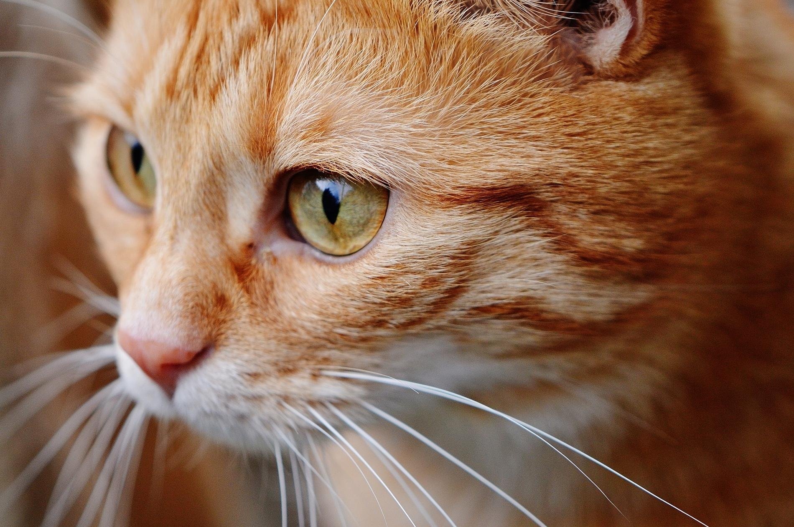

Gatos

Maullido de gato
Ventajas de los gatos
Son bolitas de pelo
Son Adorables
Te ayudan a convatir el estres y ansiedad
Son indetendientes y limpios
Su maullido es muy adorable
ver videos de gatos te ayudan a ser felices
Desventajas de los gatos
Ninguna